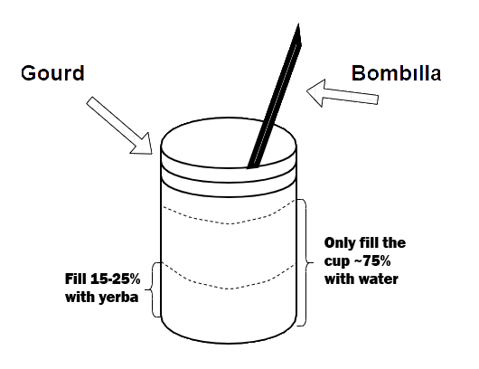

Make the Perfect Cup of Mate
Maté is an herbal tea made from yerba mate (pronounced ‘yehr-bah mah-teh’) or maté herb. Maté is a signature drink of most southern countries in South America, such as: Argentina, Paraguay, Bolivia, and Chilé.
Materials
- Gourd (a mug can act as a stand in)
- Bombílla (straw with a strainer on the end)
- Yerba Maté
- Some Sugar

- start heating water water
- you need 3-4 cups
- heat to somewhere between hot chocolate and a boil
- burning the mate will cause it to be very bitter initially
- prepare the gourd
- fill the gourd with yerba 15-25%
- put about a spoonfull of sugar in the gourd
- cover yerba with water
- this prevents the yerba from burning when you pour the hot water
- insert the bombílla
- place the strainer end in the soaking yerba
- do not stirr the yerba, it will get leaves in the bombílla
- when the water is somewhere between hot chocolate and boiling, fill the gourd ~75%
full with the water
- you need 3-4 cups
- heat to somewhere between hot chocolate and a boil
- burning the mate will cause it to be very bitter initially
- fill the gourd with yerba 15-25%
- put about a spoonfull of sugar in the gourd
- cover yerba with water
- this prevents the yerba from burning when you pour the hot water
- place the strainer end in the soaking yerba
- do not stirr the yerba, it will get leaves in the bombílla